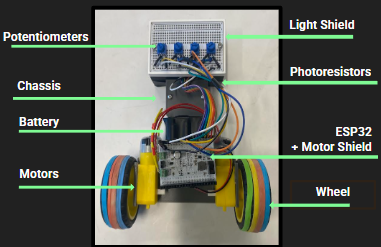
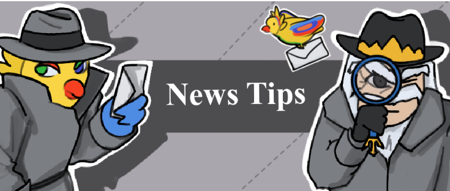

Line Following Robot

Using photoresistors and potentiometers I made a fully autonomous line-following robot.
Learn moreI enjoy creating software and hardware projects that have real-world application. Feel free to check out a few of the cool things I've been working on!

Using photoresistors and potentiometers I made a fully autonomous line-following robot.
Learn more
This is UCSD Guardian's Anonymous Tips Page that allows students to submit tips through multiple modes of encryption.
Learn more